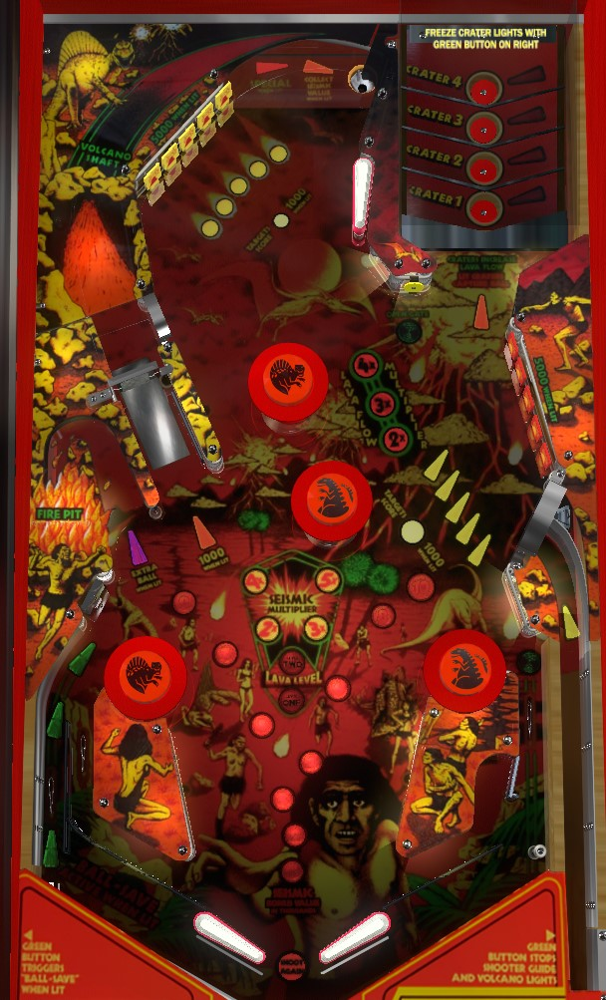

Hit lit drop target to increase bonus multiplier and light the left out lane save. Put a ball into a lit top right saucer to lock it for multiball. Lit drop targets and top saucers constantly cycle; use the second right flipper button briefly lock which drop targets and saucer(s) are lit. The left out lane must be operated manually by the second left flipper button. Locking a ball for multiball lights the spinner for 1,000 per spin. Putting a ball into Crater 2, 3, or 4 in the top left briefly qualifies 2x, 3x, or 4x playfield multiplier, whether the crater was lit for lock or not.
A plunged ball curves to the left and in the general direction of the upper left drop targets. One drop target is lit at a time, with the light moving between them quite quickly. There is also a motor near the exit of the shooter lane that changes the angle of the curve over time. Pressing the green button on the right side of the cabinet (second flipper button) will lock the position of the lit drop target and the moving curved wall until the ball is plunged. The goal is to hit the lit drop target in the upper left bank to score 5,000 points, a bonus advance, a bonus multiplier, and light the left out lane for a "ball save".
During gameplay, the light in front of each bank of drop targets continues to rapidly move between the 5-bank of targets in each bank. You can still press the green button on the right side of the cabinet to pause the motion, but when the ball is in play, the pause only lasts about 3 seconds. Hitting a lit drop target still scores 5,000 points, a bonus advance, a bonus multiplier, and lights the left out lane for a "ball save" one-time manual kickback. Unlit drop targets score 100 points and a bonus advance at first; after completing a drop target bank, it resets, and any further unlit drop target knocked down in that bank scores 1,000 points and a bonus advance. Completing either drop target bank also lights the upper right standup target to open the right out lane gate. Completing both banks of drop targets within the same ball lights the Fire Pit for extra ball, which is worth 50,000 points in competition/novelty play.
The right drop targets can be shot directly from the lower left flipper. Some of the upper drop targets can be shot directly from the lower right flipper; for the others, you'll need to either knock them down with a plunged ball (at the start of your turn or after a multiball lock) or shoot the spinner lane to get back to the top of the table, where a saucer gently tosses the ball at the upper right flipper.
The 4 saucers in the upper right of the table are labelled Crater 4, 3, 2, and 1 from top to bottom. The higher up a crater is, the faster and more direct of a shot is needed to score it. Saucers are lit intermittently in a wave-like fashion, with higher saucers being lit more than lower ones. The green button on the right side of the cabinet briefly pauses the waving motion, locking in the position of all lit saucers for about 3 seconds. Making any saucer when it is lit locks a ball for multiball. When 3 balls are locked, multiball begins. At the start of multiball, or after shooting a crater saucer that was not lit, balls are kicked out toward the flippers coming down the spinner lane on the left, which can be high risk for an immediate center drain on some machines, so be warned.
There are no multiball specific scoring features. Balls cannot be relocked during multiball. Lock stealing is available: locks persist from ball to ball and player to player, but are kicked out at the end of the game. The two lights in the center of the playfield labelled Lava Level indicate how many balls are currently in the lock.
Shooting a ball into Crater 2, 3, or 4 at any time, whether it is lit for lock or not, starts a 2x, 3x, or 4x playfield multiplier respectively, which lasts for about 10 seconds.
The left spinner scores 100 points per spin. It is unlit at the start of each ball. Locking a ball for multiball lights the spinner for 1,000 points per spin. Locking a ball when the spinner is already lit will in turn light the top center saucer for a bonus collect. The bonus collect from this saucer is a full collect of the bonus with multiplier, but collecting the bonus in this way will reset the base bonus, reset the bonus multiplier, and unlight both the top center saucer and the spinner. Since a max bonus collect on Volcano is only 5x 19,000 = 95,000 points, you may wish to try to keep the spinner lit at 1,000 per spin (times playfield multiplier!) and nudge the ball away from the top saucer any time a full shot to the left spinner is made.
Making a shot into each of the 4 Craters on a single ball, regardless of whether the craters were lit or not, will qualify the top center saucer to score a Special, worth 50,000 points in competition/novelty play.
The left side of the table bottom on Volcano is largely conventional. The out lane has a single-use manual kickback, operated by pressing the second flipper button on the left side of the machine with good timing. It's very difficult to use this well. Hit any lit drop target to relight the left out lane kickback if it is not available. The left in lane scores a bonus advance.
The right side of the table bottom is complicated. There is no in lane, just an out lane with a gate. If the gate is closed, the ball comes straight down the out lane, and needs to be nudged off a post to the left to be fed back to the flipper. If the gate is open, the ball is redirected to the left where it should be able to drop onto the guide rail that leads to the right flipper, but in practice, the ball's momentum will cause it to deflect back to the right, making it even more likely for a right out lane ball to drain when the gate is open rather than when it is closed. Using the gate closes it. Finally, there is no protection on the rail that feeds the right flipper; the ball can roll back up this lane and fall out for a drain.
The tops of the slingshots are adorned with pop bumpers, which score 100 points. Directly above the left in lane is a kicking standup target, which is functionally almost identical to another slingshot and scores 1,000 points.
Bonus is advanced by any drop target and the left in lane. Bonus multiplier is advanced by any lit drop target. Max bonus is 5x 19,000 = 95,000 points. Bonus can be collected mid-ball by locking 2 balls for multiball within the same ball in play, which lights the top center saucer for a bonus collect. Any time the bonus is collected, whether that occurs from the top saucer or at the end of the ball, both the base bonus and the bonus multiplier will be reset and must be built up again.
In competition/novelty play, both specials and extra balls score 50,000 points. To light extra ball at the Fire Pit lane in the lower left, complete both banks of drop targets in the same ball. On certain game settings, if the extra ball is set to points, it will not unlight once collected, making the Fire Pit lane a repeatable 50,000-point shot for the rest of your turn. If this ends up being the case, absolutely go for it, as the points and the safety of the return feed are unmatched compared to anything else in the game.